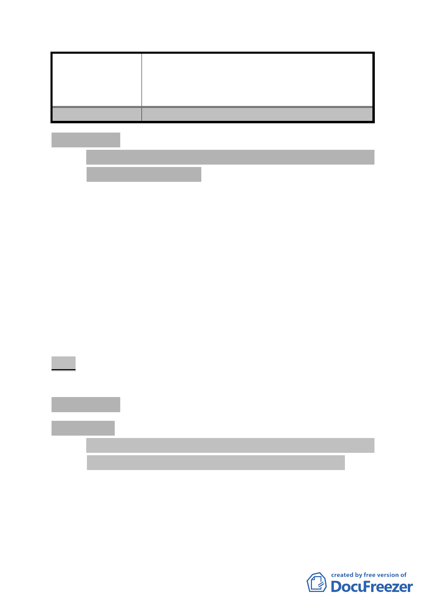

案名
委員會決議
擬定臺北市內湖區蘆洲里附近工業區細部計畫暨變
更第 2 種工業區為科技工業區 B 區(特)、科技工業
區 B 區、道路用地、護坡用地及變更工業區(供輕工
業使用)為科技工業區 A 區(特)計畫案
採納發展局回應意見。
參、報告事項
案由：為本會審議中都市計畫案逾期未補充資料或提送修正計畫
書圖之處理原則報告案
說明：
一、對於已逾都市計畫法第 19 條相關規定無法完成審議案件，基
於時空背景改變、政策調整以及無法即時反映民意等考量因
素，本會於 100 年 3 月 17 日邀集市府相關單位研商後，將循
下列行政作業程序方式辦理：
（一）每四個月定期函請市府提報最新處理情形和預定進度。
（二）除情形特殊提報委員會議說明者，逾期 3 年未補送資料或
修正書圖之案件予以退回市府，重新辦理都市計畫法定程
序。
二、以上處理原則向委員會報告，以為本會行政處理依據。
決議：除改為每三個月定期函請市府提報最新處理情形和進度
外，餘洽悉備查。
肆、討論事項
討論事項 一
案名：修訂臺北市「基隆河（中山橋至成美橋段）附近地區土地
使用分區與都市設計管制要點」（北段地區）計畫案
案情概要說明：
一、本計畫檢討範圍屬基隆河截彎取直之「基隆河（中山橋至成
美橋段）附近地區」（北段地區），即北安路、內湖一路、堤
頂大道、樂群一路及明水路所圍範圍，計畫面積約 105 公頃。
- 42 -